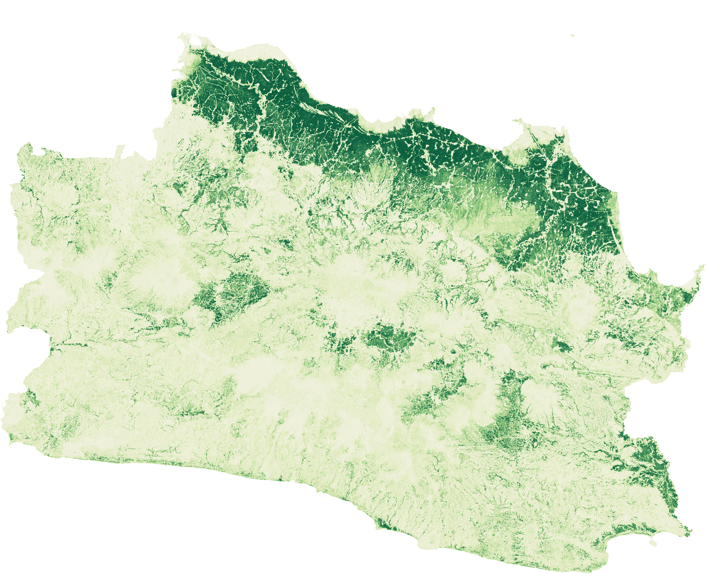
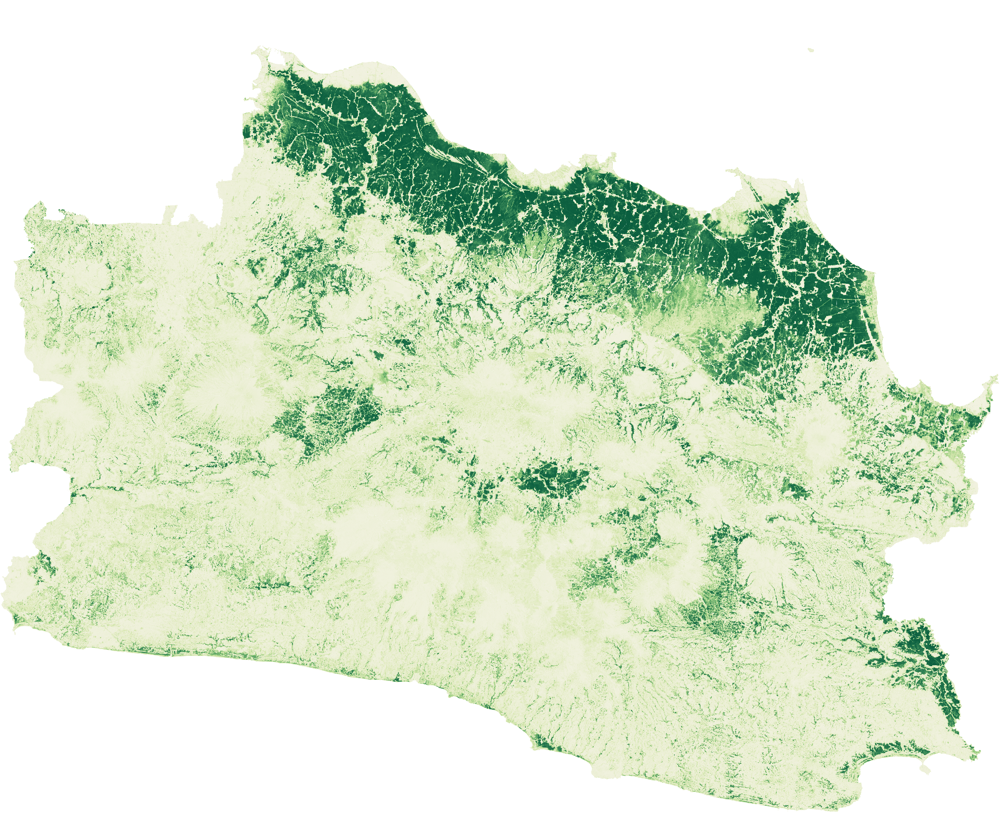

The deliverable: a historical model-derived screen.
The 2017 view shows the analytical object at its native geographic logic: a continuous probability surface. It is a starting point for inspection, not a verdict on a field.
I built a 2017–2024 remote-sensing workflow over a 10 m source grid to prioritise investigation, reconcile planning context, and stop a spatial forecast that did not clear validation.
My contribution
I designed the provenance and validation workflow, built and technically QA’d the historical screening and context pipeline, ran the Indramayu spatial-validation pilot, and recommended against publishing a pixel-level 2034 allocation.
Planning for food security in West Java is an evidence-integration problem before it is a mapping problem. Land, crop, irrigation, policy, and local administrative data sit in different systems, use different dates, and answer different questions. A detailed map can make those mismatches disappear from view—and create more certainty than the data deserves.
This study asked a narrower question: what can a 10 m historical paddy-probability screen legitimately tell a planning team? The answer had to be useful for investigation while staying honest about what was not measured.
The selected preview below is an author-produced, model-derived physical-paddy probability screening surface. It is a screening layer for prioritising investigation—not an official land record or production forecast.
Each frame makes one scoped claim. The visual, legend, source note, and caveat move together so a detailed preview is never mistaken for a high-confidence forecast.


2017 2024This is the baseline: a model-derived physical-paddy probability screen, not a parcel map.
Source & scope: author-produced model-screen and candidate-screen previews from the project workflow. The historical screen source grid is 10 m; preview images are resampled only for display. The candidate-change panel uses nominal 2 km cells in three pilots and is explicitly unvalidated. AlphaEarth attribution is retained below. No government source bundle, token, or raw atlas package is redistributed.
The 2017 view shows the analytical object at its native geographic logic: a continuous probability surface. It is a starting point for inspection, not a verdict on a field.
The 2024 screen can direct attention to places that deserve a closer look. It cannot distinguish every change in crop cycle, cloud-free observation, model response, or land use without independent reference data.
The two years occupy the same statewide frame and use the same probability scale. The moving divider makes the location of screening differences inspectable without turning them into a land-conversion claim.
This separate pilot screen narrows the field-verification queue to 1,722 candidate cells across Indramayu, Karawang, and Subang. It is deliberately labelled as candidate evidence: precision, recall, and allocation agreement could not be estimated without an independent multi-year reference.
This district frame makes patterns easier to inspect. It still does not identify a farm boundary, prove active planting, or translate directly into harvest or rice tonnage.
Aggregate trend challengers did not beat persistence, and there is no independent multi-year change reference for valid spatial-allocation evaluation. The responsible output is an explicit boundary: historical screening is available; raw 2034 pixels are not.
The historical deliverable helps a planning team see where follow-up deserves attention across West Java. It is not a count of fields, a production estimate, or a final inventory of protected agricultural land.
The Indramayu methodological pilot also showed that AlphaEarth features can distinguish the project’s user-processed pilot sample better than Sentinel-1 alone. That is a pilot discrimination result, not a statewide accuracy claim.
The forward view keeps its unit, geography, and uncertainty in the frame: aggregate paddy-area scenarios for Indramayu, Karawang, and Subang only. No location within those districts is inferred.
Conditional aggregate scenario context only. It does not identify future locations within a district.
Source & scope: author-produced aggregate scenario extract. All values combine Indramayu, Karawang, and Subang; scenario ranges are provisional, non-spatial, and not official government estimates.
The forward component is not a Java Barat forecast. It is a conditional, non-spatial aggregate exercise across three pilot kabupaten, separated from the statewide historical screen above.
The chart keeps each scenario conditional. It compares assumptions about conversion pressure and protection; it does not claim that a particular place will change by 2034.
Each interval shows the conditional P05–P95 aggregate paddy-area range for the three pilots. The wide overlap is a reason to discuss assumptions, not to over-interpret a scenario ranking.
The aggregate comparison did not beat persistence, and the spatial gate had no independent multi-year change reference. That is why the page shows a three-district range rather than fabricating a 2034 pixel or kecamatan map.
| Scenario | P05 ha | P50 ha | P95 ha |
|---|---|---|---|
| S0 · no additional conversion | 216,198 | 322,756 | 429,778 |
| S1 · business as usual | 102,707 | 278,377 | 410,578 |
| S2 · strong protection | 175,644 | 292,803 | 415,203 |
| S3 · high development pressure | 53,142 | 269,570 | 408,943 |
| S4 · production intensification | 101,983 | 278,719 | 410,713 |
All values are provisional P05–P95 conditional ranges for the aggregate of Indramayu, Karawang, and Subang. They do not allocate change to a district sub-area, kecamatan, or pixel.
The chart replaces a static figure with the actual pilot design and metrics. Its scope remains the Indramayu candidate frame in 2024, not a validation of historical conversion or a future forecast.
Indramayu methodological pilot only; it measures cross-sectional separability of a user-processed candidate frame.
Source & scope: Indramayu 2024 methodological pilot. The candidate-label target is not independent ground truth, an official paddy estimate, historical conversion validation, or statewide accuracy.
The comparison used four AlphaEarth tiles and 82 Sentinel-1 scenes for 600 user-processed candidate labels. Spatial blocks and folds reduce a simple random-split illusion, but they do not turn the candidate frame into ground truth.
Mean ROC-AUC increased from 0.761 for Sentinel-1 alone to 0.966 for AlphaEarth alone, 0.970 when combined, and 0.973 with the KP2B soft feature.
The combined models retained stronger balanced accuracy and F1 than Sentinel-1 alone. The correct next step is external validation—not presenting these pilot scores as a Jawa Barat paddy map.
| Model | ROC-AUC | Balanced accuracy | F1 |
|---|---|---|---|
| Sentinel-1 | 0.761 | 0.690 | 0.677 |
| AlphaEarth | 0.966 | 0.921 | 0.916 |
| AlphaEarth + Sentinel-1 | 0.970 | 0.925 | 0.922 |
| AlphaEarth + Sentinel-1 + KP2B | 0.973 | 0.926 | 0.923 |
Indramayu, 2024; 600 candidate labels; 104 spatial blocks; five folds. These metrics measure candidate-frame separability, not independent land-cover accuracy.
The table is now a reading sequence, but its complete values remain available below. None of these are minor footnotes: each stops a different kind of over-claim.
The historical image is provisional scientific screening, not an official or legal map.
The active boundary remains visible in the stage while the complete explanation stays in the reading order at right. A full semantic table is retained below this story.
The historical image can prioritise where to look. It cannot settle a land-rights, LP2B/KP2B, or field-status question by itself.
The comparison and candidate-change panel locate investigation needs. They do not prove permanent transition or identify a legal conversion event.
The candidate-label benchmark is useful evidence about the pilot design. It does not validate all of West Java or every historical year.
A conditional aggregate scenario is still allowed. A pixel, kecamatan, or hotspot allocation is not, because its validation gate remains closed.
Even a defensible area range is not a complete food-security conclusion. It omits the systems that determine whether rice can actually be accessed and used.
| Boundary | What it means in practice |
|---|---|
| Screening is not ground truth | The historical image is provisional scientific screening. It is not an official or legal map, and it does not replace field checking or an authorised LP2B/KP2B inventory. |
| Historical difference is not conversion | A change between annual probability screens can reflect land dynamics, crop cycles, observation conditions, or model response. Independent multitemporal reference data are needed to make a conversion claim. |
| Pilot performance has a narrow scope | The benchmark measures discrimination of a user-processed candidate frame in Indramayu. It should not be recast as province-wide classification accuracy. |
| Raw 2034 pixels are withheld | Aggregate trend challengers had a 12,967 ha MAE, worse than a 9,259 ha aggregate persistence baseline. Independent change labels were unavailable for valid spatial-allocation evaluation, so publishing a raster would overstate what the study knows. |
| Food availability is broader than paddy area | Any three-district aggregate sensitivity work excludes trade, stocks, prices, access, diet, and household distribution. It is not a complete food-security forecast. |
Useful for finding places to inspect across West Java, provided it stays labelled as a model-derived paddy-probability surface.
Useful for sensitivity discussion in Indramayu, Karawang, and Subang, but not for locating future change on a map.
Not published because the aggregate trend test did not beat persistence and no independent change labels could validate spatial allocation.
The study does not end with a single, sweeping answer about West Java’s future. It gives planners an auditable historical screening workflow, a clear request for validation data, and a shared language for distinguishing evidence from plausible narrative.
The point was to make a useful historical signal—and the boundary around it—visible.
AlphaEarth Foundations Satellite Embedding V1 Annual, 2017–2024, supplied the 10 m embedding input. The author-produced screening preview is a derivative model output, not the source imagery.
Attribution: “The AlphaEarth Foundations Satellite Embedding dataset is produced by Google and Google DeepMind.”
Sentinel-1 GRD was used as a methodological comparison input in the Indramayu pilot. Sentinel scenes and training materials are not redistributed here.
SIGI/PUPR, GISTARU, BIG, BPS, and Kementan/SISCROP informed local contextual QA. Their source data and source-derived map figures are not copied to this portfolio while source-specific public-reuse documentation is completed.
Portfolio version: August 2026. This is a methodological case study, not an official agricultural inventory, land-rights record, or operational forecast.